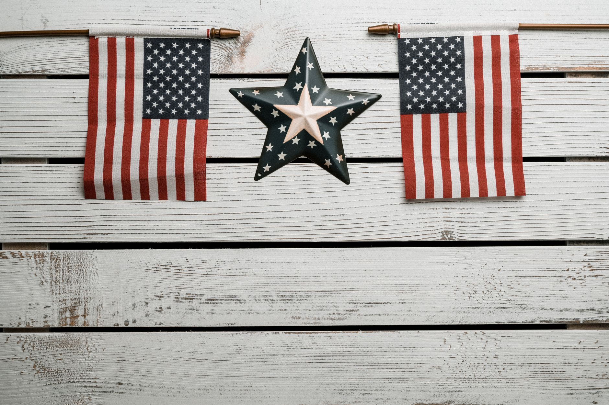

Season 1, Episode 12 — Epilogue: Reconciliation (1865–1885)

After four years of killing each other, the West Point graduates of the Civil War did something remarkable: they forgave each other. The network that had made them effective enemies made them equally effective peacemakers.
Of all the postwar transformations, none was more shocking — or more costly — than James Longstreet's. After the war, Longstreet made a choice that destroyed his reputation in the South forever: he became a Republican — the party of Lincoln, the party of Reconstruction.
He publicly supported Black suffrage and civil rights. He accepted a federal position in the Grant administration as Surveyor of Customs in New Orleans. He commanded the Metropolitan Police of New Orleans during the 1868 race riots — and fought against white supremacists in the streets.
The Lost Cause writers immediately began rewriting history. They blamed Longstreet for losing Gettysburg — claiming he was too slow, too reluctant, too stubborn to obey Lee's orders. They called him a traitor, a scalawag, a Judas. Lee never criticized Longstreet publicly, but other Confederates did — for decades.
Longstreet's military reputation was systematically destroyed. The man who was Lee's best corps commander — his "Old War Horse" — was painted as the man who cost the South the war. When Longstreet died in 1904, few Southerners mourned. But Grant's children attended the funeral.

After the war, former classmates reconciled — the West Point bond outlasted the conflict
Ulysses S. Grant was elected president in 1868 and served two terms (1869–1877). His presidency is generally considered a failure — plagued by corruption scandals (though Grant himself was personally honest). But Grant also achieved real things as president:
His post-war friendship with Longstreet was genuine and consequential. Grant gave Longstreet a federal position and protected him from political attacks. When Longstreet refused to apply for a pardon — saying he had done nothing wrong in defending his state — Grant put Longstreet's name on a personal pardon list anyway, without Longstreet asking. This act of friendship allowed Longstreet to hold federal office and vote.
Robert E. Lee became president of Washington College (later Washington and Lee University). He never spoke publicly about the war again. His only public statement on the conflict was a call for reconciliation: "All should unite in honest efforts to obliterate the effects of war."
"All should unite in honest efforts to obliterate the effects of war." — Robert E. Lee, on reconciliation after the Civil War
In 1867, Grant visited Lee at Washington College. They reportedly met in private. No one knows what they said. Two men who had commanded armies against each other — the victor and the defeated — meeting in a college president's office, having a conversation that history never recorded.
Lee died in 1870 at age 63. In 1975 — 105 years later — Congress posthumously restored his US citizenship.
West Point graduates held regular reunions after the war — and both sides attended. In 1881, the surviving members of the Class of 1846 held a reunion. Union and Confederate generals sat together. Arms that had fired at each other shook hands.
The obituaries of Civil War generals often mentioned their West Point class as their primary identity: "General X, West Point Class of 1846, died yesterday." The class bond outlasted the war itself.
In 1862, George Custer (Union) captured James Washington (Confederate) — his West Point classmate. They were photographed together: Custer in blue, Washington in gray. It is the most famous photograph of the Civil War's personal tragedy — two friends who found themselves on opposite sides. After the photo, Custer arranged for Washington to be paroled — a favor between classmates.
At Fort Donelson in 1862, Grant demanded "unconditional surrender" from his old friend Simon Buckner. Buckner was furious at what he called the "ungenerous and unchivalrous" terms. But after the war, they reconciled completely. When Grant died in 1885, Buckner marched in his funeral procession — one of the pallbearers. The man who had surrendered to Grant in the war's first major Union victory carried his coffin twenty-three years later.
The Post-War Landscape at a Glance:
How this works: Work through each phase in order. Don't scroll ahead to the answers.
Cover the answers below. For each clue, respond in the form of "Who is…" or "What is…". Answers are at the bottom of this page.
Phase 1 (Odd One Out):
Phase 2 (Core Jeopardy):
Phase 3 (Previously On… — Full Course Cumulative):
This is where we end. The Civil War was not a clash of strangers. It was a family fight — a family of men who had studied together, roomed together, fought together in Mexico, and then fought each other for four years. The West Point network that made them such effective enemies made them equally effective peacemakers. Grant pardoned Longstreet without being asked. Lee called for reconciliation and never spoke of the war again. The Class of 1846 held a reunion and shook hands across the blue-and-gray divide. The bond of the academy — of shared suffering, shared education, shared identity — outlasted the war itself. That is the story of this course: not just how West Pointers fought the Civil War, but how their relationships determined its course, and how their friendships survived its aftermath.
Elizabeth Varon's Longstreet: The Confederate General Who Defied the South is the definitive account of Longstreet's postwar conversion and the cost of his principles. For Grant's presidency and postwar role, Ron Chernow's Grant covers the full arc of his life. For the postwar reunions and the enduring bonds of the academy, John C. Waugh's The Class of 1846: From West Point to Appomattox traces the class through war and reunion.
Course complete. You've finished all 13 modules. Review the glossary or take the final self-test.
That's the end of Season 1. Thank you for walking through this course. If you have questions about anything we covered — or want to go deeper on any general, any battle, any relationship — just ask. I'm your teacher.